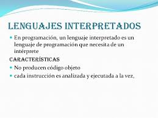
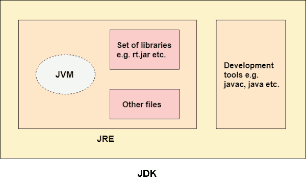
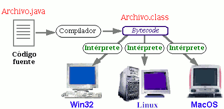
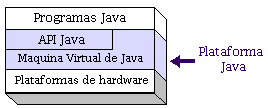

Un programa puede estar escrito en muchos lenguajes diferentes, pero cada máquina, solo entiende uno, su código máquina. Por lo tanto hay que traducir el programa fuente a programa máquina. Según como se realice dicha traducción, los lenguajes se pueden clasificar de la siguiente manera:
Java_Introducción
1.4.2. Forma de obtener el Código objeto
Lenguajes compilados
Un lenguaje de programación es compilable cuando a partir del código generado por el programador (código fuente) se puede obtener todo el código máquina que será ejecutado por el ordenador.

Lenguajes Interpretados
Un lenguaje de programación es interpretable cuando de su código fuente no se obtiene todo el correspondiente código objeto (código máquina) si no que se va interpretando, analizando y ejecutando cada una de las líneas de su código fuente según se necesiten.
No se genera un fichero ejecutable, sino que se traduce a código máquina cada una de las intrucciones cada vez que se necesita.
Como ejemplos de lenguajes interpretables tenemos: PHP, Javascript, VBscript... En estos dos últimos el propio navegador web es el que realizará la tarea de interpretación.

Ventajas e inconvenientes
| Ventajas | Desventajas | |
| Leng. Compilados |
|
|
| Leng. Interpretados |
|
|
Para obtener las ventajas de ambos tipos de lenguajes, algunos combinan estas dos tareas:
- Primero, el programa original (en Java, los ficheros donde se guarda el programa fuente tienen extensión “java”) se hace una primera traducción pero no al lenguaje máquina sino a un lenguaje intermedio (en Java es bytecodes). De dicha traducción se obtiene un fichero (en Java tienen extensión “class”). Esto equivaldría a la fase de compilación.
- En una segunda fase, dicho archivo es traducido (interpretado) en cada ejecución.
Esto es lo que realiza, por ejemplo, Java. A estos lenguajes se les llama lenguajes intermediarios.
Java
Visto que los lenguajes compilados tienen mayor velocidad de ejecución pero el código objeto solo puede ejecutarse en un tipo concreto de máquina/SO y los interpretados son más lentos, pero pueden ser ejecutados en cualquier máquina/SO, si tienen el programa intérprete instalado, podríamos decir que Java es un lenguaje intermedio. Esto quiere decir que las instrucciones de cualquier código Java primero se compilan a Bytecode, que es un lenguaje que facilita la interpretación por parte de la máquina virtual de Java (Java Virtual Machine) así brinda mejor velocidad y puede ejecutarse en cualquier sistema operativo donde esté instalada la JVM. (La JVM está dentro de la JRE).



El Kit de Desarrollo de Java (JDK) contiene las herramientas y librerías necesarias para crear y ejecutar applets y aplicaciones en Java. A continuación se listas algunas de las utilidades que se pueden encontrar en el JDK:
- javac. Es el compilador de Java. Se encarga de convertir el código fuente escrito en Java a bytecode.
- java. Es el intérprete de Java. Ejecuta el bytecode a partir de los archivos class.
- appletviewer. Es un visor de applets. En la mayoría de las ocasiones puede utilizarse en lugar de un Navegador Web.
- javadoc. Se utiliza para crear documentación en formato HTML a partir de el código fuente Java y los comentarios que contiene.
- javap. Es un desensamblador de Java.
- jar. Es una herramienta utilizada para trabajar con los archivos JAR.
Llicenciat sota la Llicència Creative Commons Reconeixement CompartirIgual 4.0